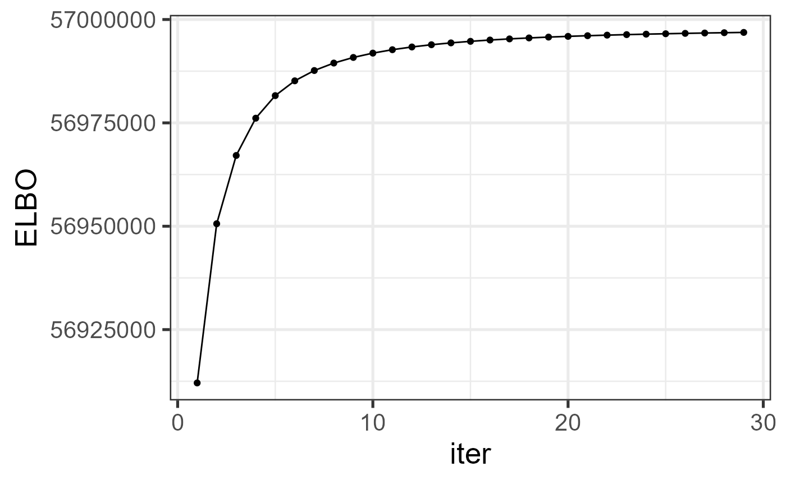
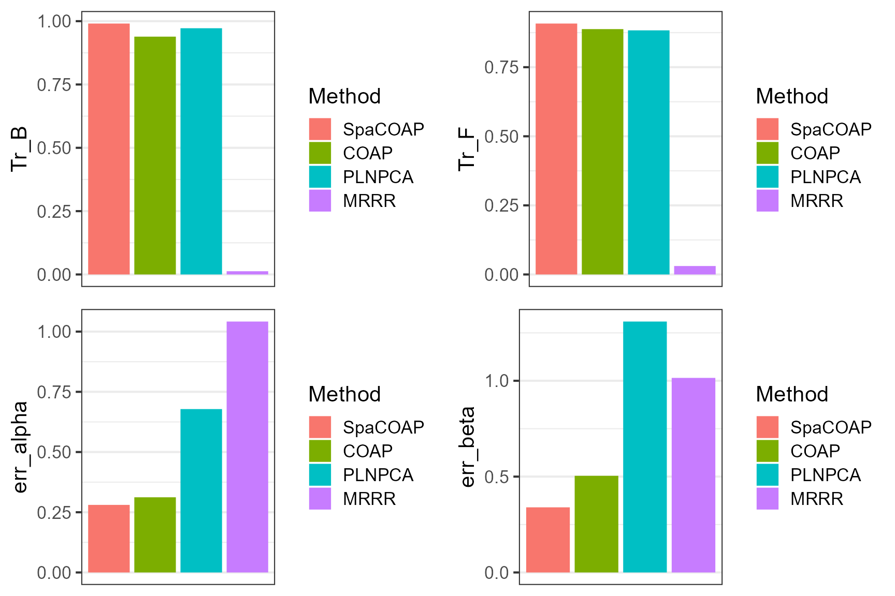

This vignette introduces the usage of SpaCOAP for the analysis of high-dimensional count data with additional high-dimensional covariates, by comparison with other methods.
The package can be loaded with the command:
library(SpaCOAP)
#> SpaCOAP : A spatial covariate-augmented overdispersed Poisson factor model is proposed to perform efficient latent representation learning method for high-dimensional large-scale spatial count data with additional covariates. Check out our Package website (https://feiyoung.github.io/SpaCOAP/docs/index.html) for a more complete description of the methods and analysesFirst, we generate the data simulated data.
width <- 20; height <- 30
n <- width*height
p=500
q = 5; d <- 40; k <- 3; r <- 3
bandwidth <- 1
rho<- c(8,0.6)
sigma2_eps=1
datlist <- gendata_spacoap(seed=1, width=width, height = height,
p=p, q=q, d=d, k=k, rank0 = r, bandwidth=1,
eta0 = 0.5, rho=rho, sigma2_eps=sigma2_eps)
#> Loading required package: MASS
#> Loading required package: Matrix
X_count <- datlist$X; H <- datlist$H; Z <- datlist$Z
F0 <- datlist$F0; B0 <- datlist$B0
bbeta0 <- datlist$bbeta0; alpha0 <- datlist$alpha0
Adj_sp <- SpaCOAP:::getneighbor_weightmat(datlist$pos, 1.1, bandwidth)Fit the SpaCOAP model using the function SpaCOAP() in the R package SpaCOAP. Users can use ?SpaCOAP to see the details about this function.
reslist <- SpaCOAP(X_count,Adj_sp, H, Z = Z, rank_use = r, q=q)
#> Calculate initial values...
#> Loading required package: irlba
#> Model fitting...
#> iter = 2, ELBO= 56912099.620381, dELBO=1.026502
#> iter = 3, ELBO= 56950601.467993, dELBO=0.000677
#> iter = 4, ELBO= 56967115.145794, dELBO=0.000290
#> iter = 5, ELBO= 56976132.467438, dELBO=0.000158
#> iter = 6, ELBO= 56981589.442438, dELBO=0.000096
#> iter = 7, ELBO= 56985170.224074, dELBO=0.000063
#> iter = 8, ELBO= 56987659.518739, dELBO=0.000044
#> iter = 9, ELBO= 56989466.471227, dELBO=0.000032
#> iter = 10, ELBO= 56990823.004329, dELBO=0.000024
#> iter = 11, ELBO= 56991869.249408, dELBO=0.000018
#> iter = 12, ELBO= 56992694.260056, dELBO=0.000014
#> iter = 13, ELBO= 56993357.005478, dELBO=0.000012
#> iter = 14, ELBO= 56993897.892980, dELBO=0.000009
#> iter = 15, ELBO= 56994345.422359, dELBO=0.000008
#> iter = 16, ELBO= 56994720.196299, dELBO=0.000007
#> iter = 17, ELBO= 56995037.427338, dELBO=0.000006
#> iter = 18, ELBO= 56995308.555786, dELBO=0.000005
#> iter = 19, ELBO= 56995542.323628, dELBO=0.000004
#> iter = 20, ELBO= 56995745.505269, dELBO=0.000004
#> iter = 21, ELBO= 56995923.415920, dELBO=0.000003
#> iter = 22, ELBO= 56996080.272269, dELBO=0.000003
#> iter = 23, ELBO= 56996219.452929, dELBO=0.000002
#> iter = 24, ELBO= 56996343.689452, dELBO=0.000002
#> iter = 25, ELBO= 56996455.208402, dELBO=0.000002
#> iter = 26, ELBO= 56996555.838389, dELBO=0.000002
#> iter = 27, ELBO= 56996647.091606, dELBO=0.000002
#> iter = 28, ELBO= 56996730.226610, dELBO=0.000001
#> iter = 29, ELBO= 56996806.297101, dELBO=0.000001
#> iter = 30, ELBO= 56996876.190180, dELBO=0.000001
str(reslist)
#> List of 10
#> $ F : num [1:600, 1:5] -0.706 0.796 -1.143 1.179 0.768 ...
#> $ B : num [1:500, 1:5] 0.0646 0.4818 -0.0207 -0.2665 0.045 ...
#> $ bbeta : num [1:500, 1:40] 0.746 0.961 2.003 0.823 1.202 ...
#> $ alpha : num [1:500, 1:3] -0.105 0.4866 0.0135 1.5708 0.9333 ...
#> $ invLambda: num [1:500, 1] 1.1 1.24 1.05 1.19 1.08 ...
#> $ eta : num 0.578
#> $ S : num [1:5, 1:5, 1:600] 6.43e-03 4.46e-05 -8.16e-05 1.84e-05 6.21e-05 ...
#> $ ELBO : num 5.7e+07
#> $ ELBO_seq : num [1:30] -2.15e+09 5.69e+07 5.70e+07 5.70e+07 5.70e+07 ...
#> $ time_use : Named num 4.85
#> ..- attr(*, "names")= chr "elapsed"Check the increased property of the envidence lower bound function.
library(ggplot2)
#> Warning: package 'ggplot2' was built under R version 4.1.3
dat_iter <- data.frame(iter=1:length(reslist$ELBO_seq[-1]), ELBO=reslist$ELBO_seq[-1])
ggplot(data=dat_iter, aes(x=iter, y=ELBO)) + geom_line() + geom_point() + theme_bw(base_size = 20)
We calculate the metrics to measure the estimatioin accuracy, where the trace statistic is used to measure the estimation accuracy of loading matrix and prediction accuracy of factor matrix, and the mean absolute error is adopted to measure the estimation error of bbeta and alpha.
First, we define the metric functions:
norm1_vec <- function(x) mean(abs(x))
trace_statistic_fun <- function(H, H0){
tr_fun <- function(x) sum(diag(x))
mat1 <- t(H0) %*% H %*% qr.solve(t(H) %*% H) %*% t(H) %*% H0
tr_fun(mat1) / tr_fun(t(H0) %*% H0)
}Then, we calculate the quantities for SpaCOAP.
metricList <- list()
metricList$SpaCOAP <- list()
metricList$SpaCOAP$F_tr <- trace_statistic_fun(reslist$F, F0)
metricList$SpaCOAP$B_tr <- trace_statistic_fun(reslist$B, B0)
metricList$SpaCOAP$alpha_norm1 <- norm1_vec(reslist$alpha- alpha0)/mean(abs(alpha0))
metricList$SpaCOAP$beta_norm1<- norm1_vec(reslist$bbeta- bbeta0)/mean(abs(bbeta0))
metricList$SpaCOAP$time <- reslist$time_useWe compare SpaCOAP with various prominent methods in the literature. (1) COAP performs covariate-argumented Poisson factor model with the consideration of the low-rank structure of the coefficient matrix, but falls short in accounting for the spatial dependence among units, which is implemented in the R package COAP; (2) PLNPCA performs covariate-argumented PCA without considering the low-rank structure of the coefficient matrix and spatial dependence among units, which is implemented in the R package PLNmodels; (3) Multi-response reduced-rank Poisson regression model (MRRR) performs the estimation of low-rank coefficient matrix and factor part by treating them as a single entity, and fails to account for spatial dependence among units, which is implemented in rrpack R package. (4) Spatial Poisson factor model, called FAST, takes into account spatial dependence among units, but unable to account for additional covariates, which is implemented in the R package ProFAST.
First, we implement COAP method:
library(COAP)
#> COAP : A covariate-augmented overdispersed Poisson factor model is proposed to jointly perform a high-dimensional Poisson factor analysis and estimate a large coefficient matrix for overdispersed count data.
#> More details can be referred to Liu et al. (2024) <doi:10.1093/biomtc/ujae031>.
tic <- proc.time()
res_coap <- RR_COAP(X_count, Z = cbind(Z, H), rank_use= k+r, q=5, epsELBO = 1e-9)
#> Calculate initial values...
#> iter = 2, ELBO= 56909331.756814, dELBO=1.026500
#> iter = 3, ELBO= 56945921.403791, dELBO=0.000643
#> iter = 4, ELBO= 56963201.970295, dELBO=0.000303
#> iter = 5, ELBO= 56973402.388227, dELBO=0.000179
#> iter = 6, ELBO= 56980291.185281, dELBO=0.000121
#> iter = 7, ELBO= 56985222.615852, dELBO=0.000087
#> iter = 8, ELBO= 56988810.790700, dELBO=0.000063
#> iter = 9, ELBO= 56991427.899858, dELBO=0.000046
#> iter = 10, ELBO= 56993342.408213, dELBO=0.000034
#> iter = 11, ELBO= 56994754.250565, dELBO=0.000025
#> iter = 12, ELBO= 56995809.008341, dELBO=0.000019
#> iter = 13, ELBO= 56996609.997192, dELBO=0.000014
#> iter = 14, ELBO= 56997229.499532, dELBO=0.000011
#> iter = 15, ELBO= 56997717.994913, dELBO=0.000009
#> iter = 16, ELBO= 56998111.035454, dELBO=0.000007
#> iter = 17, ELBO= 56998434.081278, dELBO=0.000006
#> iter = 18, ELBO= 56998705.809820, dELBO=0.000005
#> iter = 19, ELBO= 56998940.367212, dELBO=0.000004
#> iter = 20, ELBO= 56999148.915226, dELBO=0.000004
#> iter = 21, ELBO= 56999340.718450, dELBO=0.000003
#> iter = 22, ELBO= 56999523.932512, dELBO=0.000003
#> iter = 23, ELBO= 56999706.193167, dELBO=0.000003
#> iter = 24, ELBO= 56999895.060794, dELBO=0.000003
#> iter = 25, ELBO= 57000098.338034, dELBO=0.000004
#> iter = 26, ELBO= 57000324.245536, dELBO=0.000004
#> iter = 27, ELBO= 57000581.411069, dELBO=0.000005
#> iter = 28, ELBO= 57000878.604670, dELBO=0.000005
#> iter = 29, ELBO= 57001224.148357, dELBO=0.000006
#> iter = 30, ELBO= 57001624.961718, dELBO=0.000007
toc <- proc.time()
time_coap <- toc[3] - tic[3]
metricList$COAP$F_tr <- trace_statistic_fun(res_coap$H, F0)
metricList$COAP$B_tr <- trace_statistic_fun(res_coap$B, B0)
alpha_coap <- res_coap$bbeta[,1:k]
beta_coap <- res_coap$bbeta[,(k+1):(k+d)]
metricList$COAP$alpha_norm1 <- norm1_vec(alpha_coap- alpha0)/mean(abs(alpha0))
metricList$COAP$beta_norm1 <- norm1_vec(beta_coap- bbeta0)/mean(abs(bbeta0))
metricList$COAP$time <- time_coap
PLNPCA_run <- function(X_count, covariates, q, Offset=rep(1, nrow(X_count)), workers=NULL,
maxIter=10000,ftol_rel=1e-8, xtol_rel= 1e-4){
require(PLNmodels)
if(!is.null(workers)){
future::plan("multisession", workers = workers)
}
if(!is.character(Offset)){
dat_plnpca <- prepare_data(X_count, covariates)
dat_plnpca$Offset <- Offset
}else{
dat_plnpca <- prepare_data(X_count, covariates, offset = Offset)
}
d <- ncol(covariates)
# offset(log(Offset))+
formu <- paste0("Abundance ~ 1 + offset(log(Offset))+",paste(paste0("V",1:d), collapse = '+'))
control_use <- list(maxeval=maxIter, ftol_rel=ftol_rel, xtol_rel= ftol_rel)
control_main <- PLNPCA_param(
backend = "nlopt",
trace = 1,
config_optim = control_use,
inception = NULL
)
myPCA <- PLNPCA(as.formula(formu), data = dat_plnpca, ranks = q, control = control_main)
myPCA1 <- getBestModel(myPCA)
myPCA1$scores
res_plnpca <- list(PCs= myPCA1$scores, bbeta= myPCA1$model_par$B,
loadings=myPCA1$model_par$C)
return(res_plnpca)
}
tic <- proc.time()
res_plnpca <- PLNPCA_run(X_count, cbind(Z[,-1],H), q=q)
#> Loading required package: PLNmodels
#> Warning: package 'PLNmodels' was built under R version 4.1.3
#> This is packages 'PLNmodels' version 1.0.1
#> Use future::plan(multicore/multisession) to speed up PLNPCA/PLNmixture/stability_selection.
#> Warning in common_samples(counts, covariates): There are no matching names in the count matrix and the covariates data.frame.
#> Function will proceed assuming:
#> - samples are in the same order;
#> - samples are rows of the abundance matrix.
#>
#> Initialization...
#>
#> Adjusting 1 PLN models for PCA analysis.
#> Rank approximation = 5
#> Post-treatments
#> DONE!
toc <- proc.time()
time_plnpca <- toc[3] - tic[3]
metricList$PLNPCA$F_tr <- trace_statistic_fun(res_plnpca$PCs, F0)
metricList$PLNPCA$B_tr <- trace_statistic_fun(res_plnpca$loadings, B0)
alpha_plnpca <- t(res_plnpca$bbeta[1:k,])
beta_plnpca <- t(res_plnpca$bbeta[(k+1):(k+d),])
metricList$PLNPCA$alpha_norm1 <- norm1_vec(alpha_plnpca- alpha0)/mean(abs(alpha0))
metricList$PLNPCA$beta_norm1 <- norm1_vec(beta_plnpca- bbeta0)/mean(abs(bbeta0))
metricList$PLNPCA$time <- time_plnpca
## MRRR
## Compare with MRRR
mrrr_run <- function(Y, X, rank0, q=NULL, family=list(poisson()),
familygroup=rep(1,ncol(Y)), epsilon = 1e-4, sv.tol = 1e-2,
maxIter = 2000, trace=TRUE, truncflag=FALSE, trunc=500){
# epsilon = 1e-4; sv.tol = 1e-2; maxIter = 30; trace=TRUE
# Y <- X_count; X <- cbind(Z, H); rank0 = r + ncol(Z)
require(rrpack)
n <- nrow(Y); p <- ncol(Y)
if(!is.null(q)){
rank0 <- rank0+q
X <- cbind(X, diag(n))
}
if(truncflag){
## Trunction
Y[Y>trunc] <- trunc
}
svdX0d1 <- svd(X)$d[1]
init1 = list(kappaC0 = svdX0d1 * 5)
offset = NULL
control = list(epsilon = epsilon, sv.tol = sv.tol, maxit = maxIter,
trace = trace, gammaC0 = 1.1, plot.cv = TRUE,
conv.obj = TRUE)
fit.mrrr <- mrrr(Y=Y, X=X[,-1], family = family, familygroup = familygroup,
penstr = list(penaltySVD = "rankCon", lambdaSVD = 1),
control = control, init = init1, maxrank = rank0)
return(fit.mrrr)
}
tic <- proc.time()
res_mrrr <- mrrr_run(X_count, cbind(Z,H), r+ncol(Z), q=q, truncflag= TRUE, trunc=1e4)
#> Loading required package: rrpack
#> iter = 1 obj/Cnorm_diff = 32871372
#> iter = 1 obj/Cnorm_diff = 32871372
#> iter = 1 obj/Cnorm_diff = 32871372
#> iter = 1 obj/Cnorm_diff = 32871372
#> iter = 1 obj/Cnorm_diff = 32871372
#> iter = 1 obj/Cnorm_diff = 32871372
#> iter = 1 obj/Cnorm_diff = 32871372
toc <- proc.time()
time_mrrr <- toc[3] - tic[3]Calculate the metrics for MRRR.
hbbeta_mrrr <-t(res_mrrr$coef[1:ncol(cbind(Z,H)), ])
Theta_hb <- (res_mrrr$coef[(ncol(cbind(Z,H))+1): (nrow(cbind(Z,H))+ncol(cbind(Z,H))), ])
svdTheta <- svd(Theta_hb, nu=q, nv=q)
metricList$MRRR$F_tr <- trace_statistic_fun(svdTheta$u, F0)
metricList$MRRR$B_tr <- trace_statistic_fun(svdTheta$v, B0)
alpha_mrrr <- hbbeta_mrrr[,1:k]
beta_mrrr <- hbbeta_mrrr[,(k+1):(k+d)]
metricList$MRRR$alpha_norm1 <- norm1_vec(alpha_mrrr- alpha0)/mean(abs(alpha0))
metricList$MRRR$beta_norm1 <- norm1_vec(beta_mrrr- bbeta0)/mean(abs(bbeta0))
metricList$MRRR$time <- time_mrrr
## FAST
fast_run <- function(X_count, Adj_sp, q, verbose=TRUE, epsELBO=1e-8){
require(ProFAST)
reslist <- FAST_run(XList = list(X_count),
AdjList = list(Adj_sp), q = q, fit.model = 'poisson',
verbose=verbose, epsLogLik=epsELBO)
reslist$hV <- reslist$hV[[1]]
return(reslist)
}
tic <- proc.time()
res_fast <- fast_run(X_count, Adj_sp, q=q, verbose=TRUE, epsELBO=1e-8)
toc <- proc.time()
time_fast <- toc[3] - tic[3]
metricList$FAST$F_tr <- trace_statistic_fun(res_fast$hV, F0)
metricList$FAST$B_tr <- trace_statistic_fun(res_fast$W, B0)
metricList$FAST$time <- time_fastNext, we summarized the metrics for COAP and other compared methods in a dataframe object.
list2vec <- function(xlist){
nn <- length(xlist)
me <- rep(NA, nn)
idx_noNA <- which(sapply(xlist, function(x) !is.null(x)))
for(r in idx_noNA) me[r] <- xlist[[r]]
return(me)
}
dat_metric <- data.frame(Tr_F = sapply(metricList, function(x) x$F_tr),
Tr_B = sapply(metricList, function(x) x$B_tr),
err_alpha =list2vec(lapply(metricList, function(x) x$alpha_norm1)),
err_beta = list2vec(lapply(metricList, function(x) x$beta_norm1)),
time = sapply(metricList, function(x) x$time),
Method = names(metricList))
dat_metric$Method <- factor(dat_metric$Method, levels=dat_metric$Method)Plot the results for COAP and other methods, which suggests that COAP achieves better estimation accuracy for the quantiites of interest.
library(cowplot)
p1 <- ggplot(data=subset(dat_metric, !is.na(Tr_B)), aes(x= Method, y=Tr_B, fill=Method)) + geom_bar(stat="identity") + xlab(NULL) + scale_x_discrete(breaks=NULL) + theme_bw(base_size = 16)
p2 <- ggplot(data=subset(dat_metric, !is.na(Tr_F)), aes(x= Method, y=Tr_F, fill=Method)) + geom_bar(stat="identity") + xlab(NULL) + scale_x_discrete(breaks=NULL)+ theme_bw(base_size = 16)
p3 <- ggplot(data=subset(dat_metric, !is.na(err_alpha)), aes(x= Method, y=err_alpha, fill=Method)) + geom_bar(stat="identity") + xlab(NULL) + scale_x_discrete(breaks=NULL)+ theme_bw(base_size = 16)
p4 <- ggplot(data=subset(dat_metric, !is.na(err_beta)), aes(x= Method, y=err_beta, fill=Method)) + geom_bar(stat="identity") + xlab(NULL) + scale_x_discrete(breaks=NULL)+ theme_bw(base_size = 16)
plot_grid(p1,p2,p3, p4, nrow=2, ncol=2)
We applied the singular value ratio based method to select the number of factors and the rank of coefficient matrix. The results showed that the SVR method has the potential to identify the true values.
res1 <- chooseParams(X_count, Adj_sp, H, Z, verbose=FALSE)
#> Calculate initial values...
#> Model fitting...
print(c(q_true=q, q_est=res1['hq']))
#> q_true q_est.hq
#> 5 5
print(c(r_true=r, r_est=res1['hr']))
#> r_true r_est.hr
#> 3 4Session Info
sessionInfo()
#> R version 4.1.2 (2021-11-01)
#> Platform: x86_64-w64-mingw32/x64 (64-bit)
#> Running under: Windows 10 x64 (build 22631)
#>
#> Matrix products: default
#>
#> locale:
#> [1] LC_COLLATE=Chinese (Simplified)_China.936
#> [2] LC_CTYPE=Chinese (Simplified)_China.936
#> [3] LC_MONETARY=Chinese (Simplified)_China.936
#> [4] LC_NUMERIC=C
#> [5] LC_TIME=Chinese (Simplified)_China.936
#>
#> attached base packages:
#> [1] stats graphics grDevices utils datasets methods base
#>
#> other attached packages:
#> [1] cowplot_1.1.1 rrpack_0.1-11 PLNmodels_1.0.1
#> [4] COAP_1.2 ggplot2_3.4.1 irlba_2.3.5
#> [7] Matrix_1.4-0 LaplacesDemon_16.1.6 MASS_7.3-55
#> [10] SpaCOAP_1.2
#>
#> loaded via a namespace (and not attached):
#> [1] tidyr_1.2.0 sass_0.4.1 splines_4.1.2
#> [4] bit64_4.0.5 jsonlite_1.8.0 foreach_1.5.2
#> [7] bslib_0.3.1 assertthat_0.2.1 highr_0.9
#> [10] yaml_2.3.6 corrplot_0.92 globals_0.15.0
#> [13] GFM_1.2.1 pillar_1.9.0 lattice_0.20-45
#> [16] glue_1.6.2 torch_0.9.1 doSNOW_1.0.20
#> [19] digest_0.6.29 colorspace_2.1-0 htmltools_0.5.2
#> [22] pkgconfig_2.0.3 listenv_0.8.0 purrr_0.3.4
#> [25] scales_1.2.1 snow_0.4-4 processx_3.5.2
#> [28] tibble_3.2.1 generics_0.1.2 farver_2.1.1
#> [31] cachem_1.0.6 withr_2.5.0 cli_3.2.0
#> [34] survival_3.2-13 magrittr_2.0.3 crayon_1.5.1
#> [37] memoise_2.0.1 evaluate_0.15 ps_1.6.0
#> [40] fs_1.5.2 fansi_1.0.4 future_1.26.1
#> [43] parallelly_1.32.0 textshaping_0.3.6 tools_4.1.2
#> [46] lifecycle_1.0.3 lassoshooting_0.1.5-1 stringr_1.4.0
#> [49] glassoFast_1.0 glmnet_4.1-3 munsell_0.5.0
#> [52] callr_3.7.0 compiler_4.1.2 pkgdown_2.0.6
#> [55] jquerylib_0.1.4 systemfonts_1.0.4 rlang_1.1.0
#> [58] grid_4.1.2 nloptr_2.0.0 iterators_1.0.14
#> [61] rstudioapi_0.13 igraph_1.3.5 labeling_0.4.2
#> [64] rmarkdown_2.11 gtable_0.3.3 codetools_0.2-18
#> [67] DBI_1.1.2 R6_2.5.1 gridExtra_2.3
#> [70] knitr_1.37 dplyr_1.0.9 future.apply_1.9.0
#> [73] fastmap_1.1.0 bit_4.0.4 utf8_1.2.3
#> [76] rprojroot_2.0.3 ragg_1.2.2 coro_1.0.3
#> [79] shape_1.4.6 desc_1.4.0 stringi_1.7.6
#> [82] parallel_4.1.2 Rcpp_1.0.10 vctrs_0.6.1
#> [85] tidyselect_1.1.2 xfun_0.29